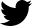
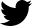

Rebecca K. Leane


| Academic Appointments | |
|
SLAC National Accelerator Laboratory 2020 - Present SLAC Particle Theory Group, Stanford University Postdoctoral Research Associate | |
| |
Massachusetts Institute of Technology 2017 - 2020 MIT Center for Theoretical Physics Postdoctoral Research Associate |
| Education | |
| |
University of Melbourne 2013 - 2017 Centre of Excellence for Particle Physics at the Terascale (CoEPP) Ph.D. in Physics, Phenomenology of Particle Dark Matter Thesis Advisor: A/Prof. Nicole Bell |
 |
University of Cambridge 2012 - 2013 Department of Applied Mathematics and Theoretical Physics (DAMTP) Master of Advanced Study in Mathematics (Part III of the Mathematical Tripos) Essay Advisor: Prof. Ben Allanach |
|
Monash University 2008 - 2011 Bachelor of Science Advanced with Honours Majors: Physics and Mathematics. High Distinction. Thesis Advisor: A/Prof. Csaba Balazs | Funded Grants |
| 2019 - 2020 |
NASA Fermi Guest Investigator Program, Cycle 12, $70,000 USD Grant No. 80NSSC19K1515, Slatyer and Leane |
| Research Experience | |
| 2020 - Present |
Postdoctoral Researcher SLAC Particle Theory Group, Stanford University, SLAC National Accelerator Laboratory, USA |
| 2017 - 2020 |
Postdoctoral Researcher MIT Center for Theoretical Physics, Massachusetts Institute of Technology, USA |
| 2016 Apr - Jun |
Visiting Researcher Center for Cosmology and AstroParticle Physics (CCAPP), Ohio State University, USA Working with Prof. John Beacom |
| 2015 Sept - Oct |
Visiting Researcher Department of Physics and Astronomy, Vanderbilt University, USA Working with Prof. Tom Weiler |
| 2013 - 2017 |
Graduate Student Researcher CoEPP, University of Melbourne, Australia Under supervision of A/Prof Nicole Bell |
| 2010 - 2011 |
Undergraduate Student Researcher School of Physics, Monash University, Australia Third year research project (2010), honours year research project (2011). Under supervision of A/Prof Csaba Balazs |
| Selected Prizes, Scholarships, Awards | |
| 2018 | Chancellor’s Prize for Excellence in the PhD Thesis, U. Melbourne |
| 2018 | Dean’s Award for Excellence in Graduate Research, U. Melbourne |
| 2017 | Australian Government Research Training Scholarship |
| 2016 | Royal Society of Victoria Young Scientist Research Prize |
| 2016 | Science Abroad Travelling Scholarship |
| 2015 | Laby Foundation Early Career Researcher Travel Scholarship |
| 2012 - 2016 | Australian Postgraduate Award (APA) |
| 2011 | Monash Jubilee Honours Scholarship |
| 2011 |
J. L. William Honours Scholarship | Selected Outreach |
| 2019 |
Interview, The Boston Globe Newspaper MIT scientists find dark matter could be cause of mysterious energy at the center of our galaxy |
| 2019 |
Interview, MIT News Is there dark matter at the center of the Milky Way? |
| 2019 |
Press Piece, APS Physics New Hope for Milky-Way Dark Matter |
| 2019 |
Interview, Gizmodo The Future of Particle Physics Is Bright, Bleak, and Magical |
| 2019 |
Interview, Quanta Magazine Dark Matter Gets a Reprieve in New Analysis |
| 2019 |
Interview, Kavli Foundation Dark Matter is Back |
| 2019 |
Interview, Science Magazine Physicists Revive Hunt for Dark Matter in the Heart of the Milky Way |
| 2019 |
Interview, Popular Mechanics Filling the Void: What is Dark Matter? |
| 2014 - 2015 |
Key Scientific Researcher on International Science Documentary Series “Uranium: Twisting the Dragon’s Tail” Worked with Emmy Award winning producer Sonya Pemberton and writer Wain Fimeri, over 12 months part time. Had a major role in explaining science content and developing the script for the series. The documentary was presented by Derek Muller of Veritasium, and aired in the United States, Australia, Germany, France, Middle East, Norway and Sweden. The series has been nominated for and won numerous film awards. US viewers can preview parts of the series on the PBS website. Others can view the trailer on YouTube. The press release from CoEPP is available here. |
Postdoctoral Researcher in the Particle Theory Group at SLAC.
SLAC National Accelerator Laboratory
Stanford University
2575 Sand Hill Road
Menlo Park, CA 94025, USA
 @RKLeane
 rleane@slac.stanford.edu
rleane@slac.stanford.edu

SLAC National Accelerator Laboratory
Stanford University
2575 Sand Hill Road
Menlo Park, CA 94025, USA
 @RKLeane
rleane@slac.stanford.edu